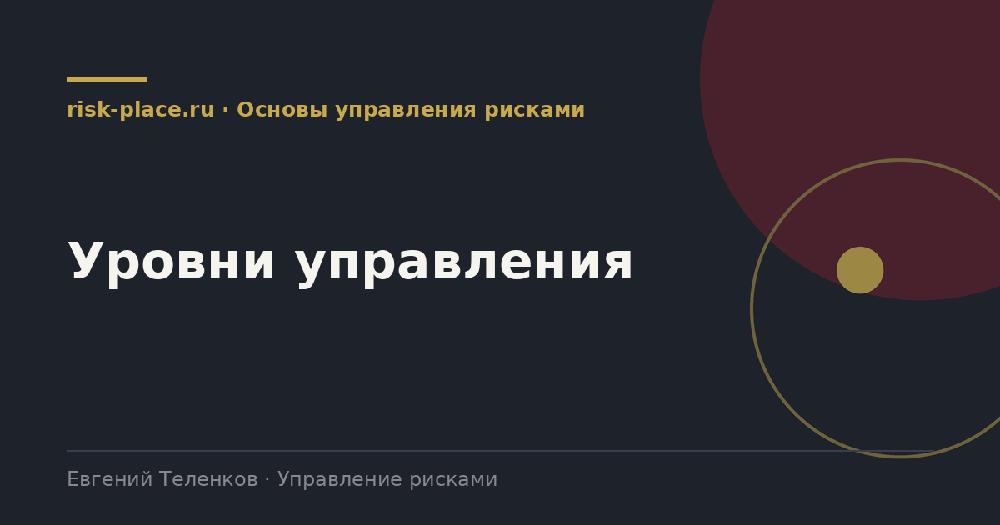

Главная · Библиотека · Основы управления рисками · Уровни управления
Библиотека · Основы управления рисками
Один и тот же риск выглядит по-разному с рабочего места, из проектного офиса и из зала заседаний. Разбираем, как устроены уровни и что передается между ними.

Практическая схема для средней и крупной компании.
| Уровень | Кто работает | Что решает |
|---|---|---|
| Процесс, рабочее место | Владелец процесса, линейный руководитель | Ежедневные операционные риски, контрольные процедуры |
| Проект или подразделение | Руководитель проекта, риск-координатор | Реестр и карта своего объекта, план реагирования |
| Портфель, компания | Риск-функция, риск-комитет | Сквозные риски, агрегированные метрики, распределение ресурсов |
| Совет директоров | Совет, комитет по аудиту | Риск-аппетит, существенные риски, оценка работы системы |
Наверх идут не все риски, а только те, что превышают порог существенности своего уровня, и те, что нельзя закрыть имеющимися полномочиями. Второй критерий важнее первого. Риск среднего размера, для устранения которого нужны деньги или решение смежного подразделения, должен подняться, даже если по оценке он не красный.
Вместе с риском наверх передается не только оценка, но и предложение. Вынесение риска без варианта решения превращает комитет в место для тревоги, а не для управления.
Вниз идут три вещи. Риск-аппетит и пороги, то есть границы допустимого, которые нижние уровни используют как критерий. Решения по вынесенным рискам с ресурсами и сроками. И обратная связь по качеству работы, потому что без нее нижний уровень не понимает, правильно ли он формулирует и оценивает.
Отсутствие движения сверху вниз это самая частая причина, по которой система затухает. Подразделения полгода отправляют реестры наверх, не получают ничего в ответ и перестают стараться.
Проверьте свою систему по этому списку.
Частые вопросы
Одна форма для любого вопроса
Расскажем о ближайших датах, предложим формат под ваш состав участников и назовем порядок бюджета.
Предпочитаете почту — напишите на info@risk-place.ru. Адрес: Москва, улица Скаковая, 32с2.
 risk-
risk-